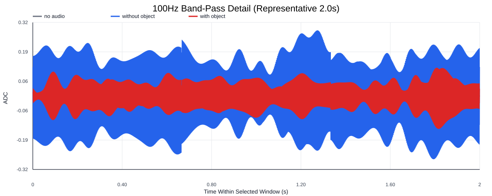
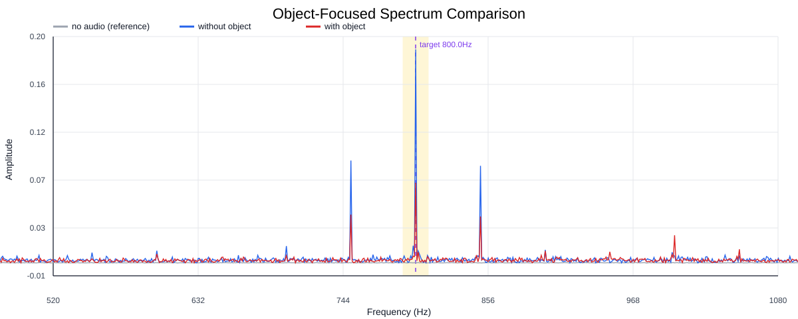
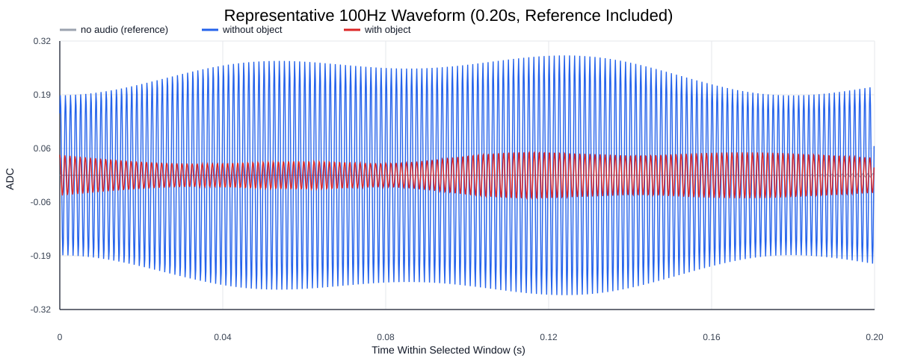
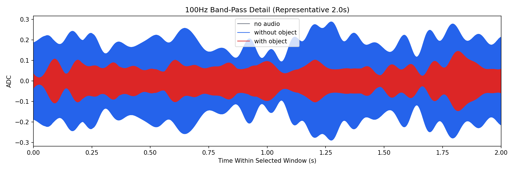
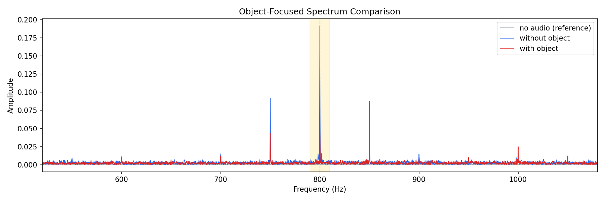
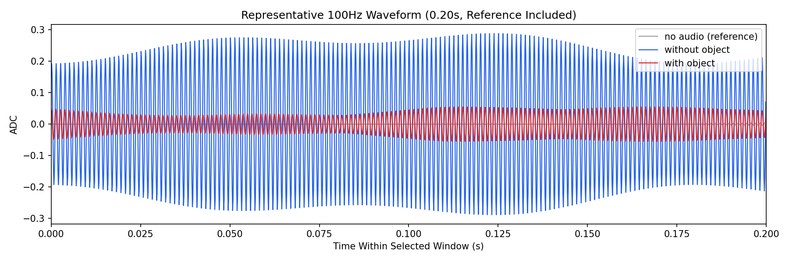

Background: F:\项目类文件夹\异物检测4.10\Data_Dual\frequency_sweep\0800Hz\repeat_04\raw\no_audio.csv
Without object: F:\项目类文件夹\异物检测4.10\Data_Dual\frequency_sweep\0800Hz\repeat_04\raw\without_object.csv
With object: F:\项目类文件夹\异物检测4.10\Data_Dual\frequency_sweep\0800Hz\repeat_04\raw\with_object.csv
| Metric | 无音频 | 100Hz无异物 | 100Hz有异物 | 无异物/无音频 | 有异物/无异物 | 有异物/无音频 |
|---|---|---|---|---|---|---|
| centered_rms | 0.020891 | 0.333152 | 0.248170 | 15.9470 | 0.7449 | 11.8792 |
| raw_target_amp | 0.000198 | 0.191736 | 0.071986 | 968.2604 | 0.3754 | 363.5269 |
| filtered_rms | 0.001475 | 0.146909 | 0.061938 | 99.6003 | 0.4216 | 41.9926 |
| filtered_target_amp | 0.000198 | 0.191736 | 0.071986 | 968.2604 | 0.3754 | 363.5269 |
| filtered_energy_ratio | 0.004985 | 0.194452 | 0.062290 | 39.0090 | 0.3203 | 12.4961 |
| window_filtered_target_amp_mean | 0.001012 | 0.202578 | 0.081410 | 200.2727 | 0.4019 | 80.4836 |
| window_filtered_target_amp_std | 0.001716 | 0.045028 | 0.031324 | 26.2458 | 0.6957 | 18.2582 |





